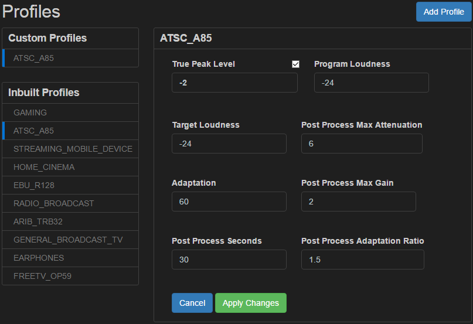

Loudness profiles
MPEG Transport Streams are processed for loudness in Matrix ACE by applying a certain Loudness Profile to them.
A Loudness Profile is a set of saved values which are used to apply loudness normalization to an audio stream.
The values are passed as parameters to the loudness processor, which uses its proprietary algorithms to output audio which meets the specified Target Loudness levels.
Built-in loudness profiles
Built-in loudness profiles included in Matrix ACE include:
- FreeTV OP-59
- ARIB TR-B32
- ATSC A/85
- EBU R128
- Home Cinema
- Gaming
- Radio Broadcast
- General TV Broadcast
- Earphones
- Mobile Device
Custom loudness profiles
Customized loudness profiles can also be created from existing profiles, for situations where the built-in profiles do not meet the requirements of the user’s environment.
Create a new custom loudness profile
MPEG Transport Streams are processed for loudness in Matrix ACE by applying a certain loudness profile to the stream.
A set of built-in loudness profiles are included in Matrix ACE.
These profiles can be copied and modified to create new custom profiles.
The process for creating a new custom loudness profile is outlined below:
- Click on an existing loudness profile to reveal its values
- Click the Customize button to create a new custom loudness profile. The new profile is populated with values from the existing loudness profile chosen in the step above

- Enter a new Name for the custom profile
-
Modify each of the custom loudness profile’s fields to suit your requirements
-
Click the Apply Changes button to save the values of the custom loudness profile.
Modify a custom loudness profile
The loudness profiles built into Matrix ACE can be copied and modified to create new custom profiles.
Once created, these custom loudness profiles can be modified as needed and the changes saved.
The process for modifying an existing custom loudness profile is outlined below:
- Click on an existing custom loudness profile to reveal its values
-
Modify each of the custom loudness profile’s fields to suit your requirements
-
Click the Save button to save the new values of the custom loudness profile.
Delete a custom loudness profile
Custom loudness profiles can be deleted as required.
The process for deleting an existing custom loudness profile is outlined below:
- Click on an existing custom loudness profile to reveal its values
- Click the Delete button to delete the custom loudness profile.
Note: Built-in loudness profiles cannot be deleted.
Click here to read an explanation of the each of the fields in a loudness profile